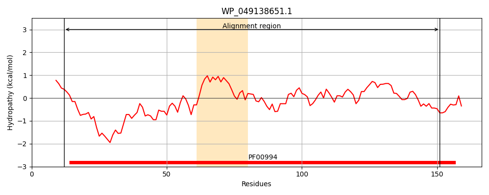
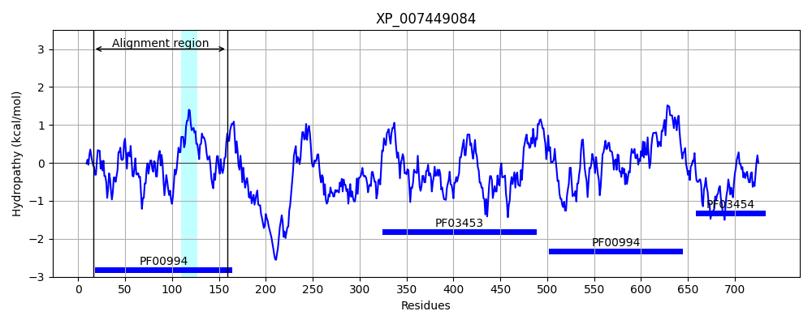
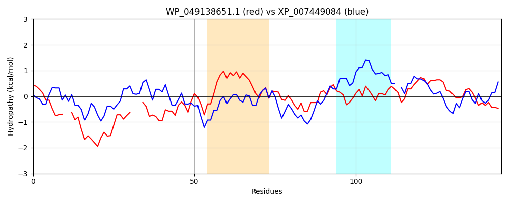

Hit Accession: XP_007449084
Hit TCID: 8.A.176.1.3
Hit Description: gnl|BL_ORD_ID|22299 gnl|TC-DB|XP_007449084.1|8.A.176.1.3 PREDICTED: gephyrin isoform X3 [Lipotes vexillifer]
Mach Len: 145
e:0.000000
Query TMS Count : 1
Hit TMS Count: 1
TMS-Overlap Score: 0.000000
Predicted Substrates:None
BLAST Alignment:
Score: 149 , Bit scores: 62 bits, E-value: 8.2e-12, Alignment length: 145, Percentage identity: 30
Query: 12 RIAILTVSSR--RGEEDDTSGHWLREAAQEA---GHHVVDKAMVKENRYAIRAQVSAWIASDDVQVVLITGGTGFTEGDQAPEALLPLFDREVEGFGEVFRMLSFEEIGTSTLQSRAVAGVANRTLIFAMPGSTKACRTAWDNII 151
R+ +LTVS R +D SG L++ Q+ G + +V + I+ + W ++ ++L TGGTGF D PEA + +RE G M S L SR V G+ +TLI +PGS K + + I+
Sbjct: 16 RVGVLTVSDSCFRNLAEDRSGINLKDLVQDPSLLGGTISAYKIVPDEIEEIKETLVDWCDEKELNLILTTGGTGFAPRDVTPEATKEVIEREAPGMALAMLMGSLNVTPLGML-SRPVCGIRGKTLIINLPGSKKGSQECFQFIL 159 | Protein Hydropathy Plots: |
|---|
|  |  |
Pairwise Alignment-Hydropathy Plot:
|
|---|
|  |